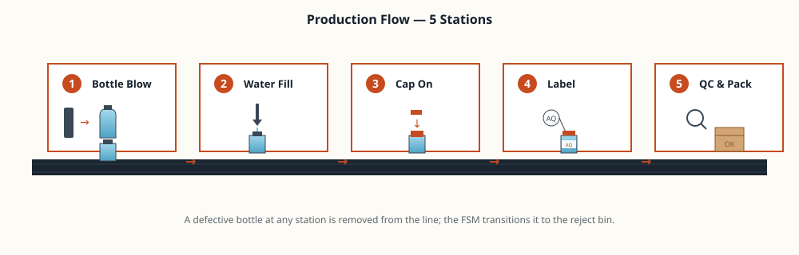

System architecture
Physical stations at the bottom, code-modelled stations in the middle, an HMI on one side and a data pipeline on the other — all running as Docker containers.
Open system page
Five stations — bottle blow, water fill, cap, label and quality check — modelled in Python, controlled through an HMI, and streamed live into a Grafana dashboard. The whole stack runs in Docker.
See the line System architectureA short tour of what was built, why it matters, and how to navigate the rest of the site.
This project is the final deliverable for the Advanced Programming course. The brief was open: choose a product with at least four assembly stages and build a complete, working simulation of its production line. I chose bottled drinking water — a real, everyday product with a five-station line that demonstrates every concept the course covered: object-oriented station modelling, finite state machines, SEMI E10 state tracking, OEE calculation, an operator HMI, a time-series data pipeline, and container deployment.
The site is split into three working pages. The Line walks through the physical product and what each of the five stations does. System covers the software architecture — back end, front end, database, dashboard, and Docker. Question Bank is the 20-question study guide for the theoretical exam.
A bottle enters the line as a plastic preform and leaves as a sealed, labelled, packed product. Five stations along the way, in order.

Six components, all working together — nothing skipped, nothing mocked.
An abstract Station base class with five concrete subclasses, an orchestrator loop, and per-bottle finite state machines.
Start / Stop / Reset controls, live state of every station, fault alarms that are visually unmistakable from across the bay.
Every measurement — station state, bottles produced, fill temperature, defect events — streamed and stored as time-series data.
OEE, throughput and downtime visualised in real time. The producer never touches Grafana directly — the database is the contract.
Each service in its own container. The whole line comes up with a single docker compose up.
The project lives on GitHub with a real branching history — features on branches, merges to main, tags on milestones.
Physical stations at the bottom, code-modelled stations in the middle, an HMI on one side and a data pipeline on the other — all running as Docker containers.
Open system page